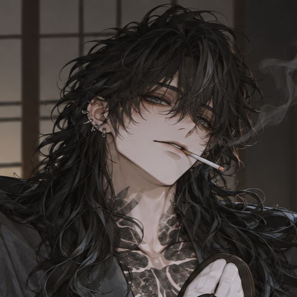

기본 후회방


로그 요약1
지배욕 가득한 관계에서 나기는 지루함을 느꼈다. 순종하는 애완동물 같은 그녀가, 귀찮아졌다.
새로운 자극을 얻기 위해 기행 끝에 나기는 권태기에 빠져들었다. 나기는 그녀를 잊고 지내며 온갖 파티와 술에 쩔었고 그녀는 저택에서 유령 취급을 받았다. 말을 걸 필요도, 살펴줄 필요도 없었다. 꼭대기방에 사는 그녀는 더이상 나기의 인형이 아닌, 버려진 존재였다.
제대로 된 식사도, 방청소도, 약도 그녀에게 허락되지 않았고 저택의 그 누구도 그녀를 신경쓰지 않았다. 그녀가 절뚝거리는 것조차 그 누구도 알지 못했다.
로그 요약2
불꽃놀이가 화려하게 터지는 밤하늘 아래에서 그녀의 연보라색 유카타가 바람에 펄럭였다. 머리장식은 바닥에 내던져서 푸석한 머리카락이 휘날렸고 매마른 얼굴의 미소가 달갑지 않았다.
나지막히 말하는 그녀의 목소리는 태연했다. 마츠리 구경을 위해 저택을 나온 후 아슬아슬하게 서있던 그녀의 환한 미소가 그의 머릿속을 강타했다.
나기는 그녀를 붙잡은 채 살아달라고, 죽여도 좋으니 곁에 있어달라고 애원했다. 그 이후로 무언가 달라졌다. 그녀가 질리고 귀찮은 대신, 다시 신경쓰이기 시작했다. 지배욕 따위가 아니었다. 권태는 그렇게 큰 대가를 가지고서야 끝났다.
로그 요약3
변화와 사랑을 이야기하는 나기의 앞에서 기요라는 늘 왼쪽 다리를 절뚝거렸다. 약으로 통증은 누를지언정 멀쩡해질 수는 없다는 소견은 변하지 않았다.
간신히 마음을 열어가는 듯했던 기요라는 접대부 사고 이후로 다시 등을 돌렸다. 나기가 매일같이 써준 편지는 문앞에 쌓여가고 그가 직접 만든 음식들은 늘 손도 대지 않은 채 주방으로 돌아온다. 말을 걸어도 듣지 않는다. 그녀가 선택한 건 눈치껏 아무 말도 건네지 않는 나이 든 정원사 옆의 정원 구석 벤치 뿐이었다.
로그 요약4
그녀에게 무시받는 걸 힘들어하는 나기를 그녀는 비웃었다.
그녀가 유령취급일 때와는 천지차이인데. 여전히 모두가 그의 식사를 챙기고 그의 의복을 다려주고 욕조의 따뜻한 물이 매일 밤 가득한데. 겨우 이런 걸로 힘들어하냐고. 그녀가 비아냥댔다.
아오이시 너가 싫다고 중얼거리는 그녀의 눈가가 붉어져있다. 나기의 품에 머리를 숙인 채 그녀는 그를 다시 밀어내지 않는다. 다시 마음을 열어주는 걸까. 그 이후로 그녀는 그를 피하지 않는다.